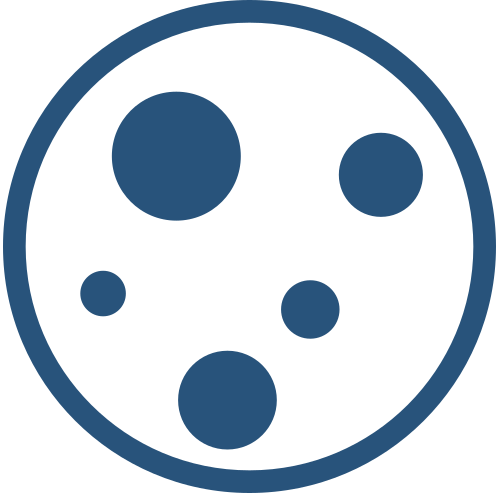
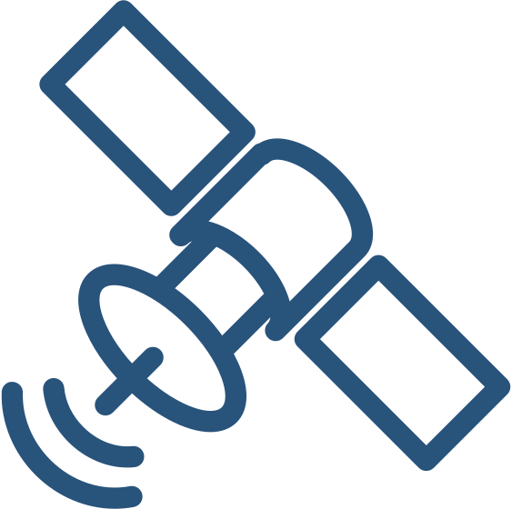

Eyes to the Sky
This Week in Near-Earth Objects
Neos in the Neighbourhood
We don't want to go the way of the dinosaurs, so let's keep our eyes on the sky! The following is a list of Neos will be passing by Earth over the next week:

New to Neos?
Near-Earth Objects (Neos) are comets and asteroids that have been nudged by the gravitational attraction of nearby planets into orbits that allow them to enter the Earth's neighborhood.
Latest News
Stay informed on what's going on in the skys overhead. Get the latest near-earth object news from Nasa's Jet Propulsion Labratory blog.
